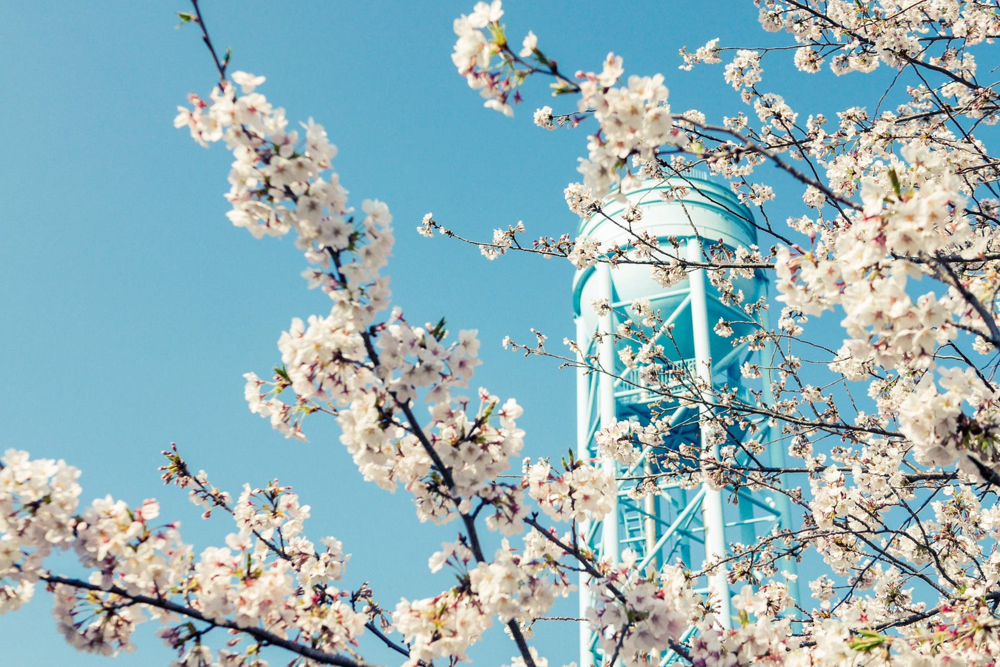

挨拶
写真が趣味の主が大好きな長野県をオススメしてみるというＨＰです。長野県の中で自分が訪れたことのあるところをメインにオススメ出来たら良いと思います。
概要
 長野県は広いためまだ全然周り切れてません。その中でも、長野県の中の千曲市を中心に見ていこうと思います。すこしでも興味を持ってくれると嬉しいです。
また、世界的に新型コロナウイルスの流行により旅行に行けないので、旅行気分を味わえてっていただければ幸いです。そして、終わった際には訪れてみて下さい。
ちなみにこの画像は長野県には関係ないです。私の好きなキャラクターです。タヌキとキツネです。ゆるくかわいいキャラクターで皆さんも癒されてください。
長野県は広いためまだ全然周り切れてません。その中でも、長野県の中の千曲市を中心に見ていこうと思います。すこしでも興味を持ってくれると嬉しいです。
また、世界的に新型コロナウイルスの流行により旅行に行けないので、旅行気分を味わえてっていただければ幸いです。そして、終わった際には訪れてみて下さい。
ちなみにこの画像は長野県には関係ないです。私の好きなキャラクターです。タヌキとキツネです。ゆるくかわいいキャラクターで皆さんも癒されてください。
参考文献（HP）